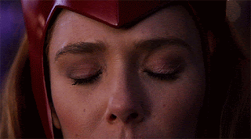

“O buraco é beeem mais embaixo.”
O buraco é beeem mais embaixo

“...principalmente porque a ausência dói...mas a presença mata.”
Hoje é um desses dias que apenas sobrevivo da melhor maneira possível me convencendo a não ficar paralisada diante do caos ao que me encontro...
parei de buscar entender o porquê que tem que ser assim...não tem nem sentido e nem uma explicação lógica.
Hoje eu não tenho a mínima vontade de existir..., mas não porque a vida não é bela, sim porque hoje em especial tudo dói...
não é uma dor que dê pra levar assim "de boas"...é algo profundo e sombrio.
Em terapia tenho aprendido que as pessoas tem jeitos diferentes de amar, e sim já tinha conhecimento disso. Porém a novidade da vez é que existem alguns "amores" que diante de padrões psicológicos quem o sente não consegue lidar quando o sentimento também se remete a uma "falha" seja por omissão...ou qualquer outra situação...
O que ocorre é que meus dois pilares têm esse tipo de amor referente a mim. E tem sido um luto esmagador olhar isso sem filtro e compreender pra não acontecer exatamente o que me vem à mente em dias como o de hoje.
Não se trata de aceitar esse amor, até porque não consigo nem com todo esforço do mundo manter isso perto de mim ou tornar íntimo. Tudo em mim dói só de precisar racionalizar...imagine.
O ponto de dor é o quão injusto isso é por conta da culpa que na maioria das vezes sinto por não querer perto, principalmente porque a ausência dói...mas a presença mata.
Nós seres humanos somos muito complexos
e depois de um tempo por mais que todo mundo fale e faça parecer que tudo é muito fácil quando se trata de sentimentos, reitero minha cara leitora
o buraco é beeem mais embaixo.
Srt_Hyuga